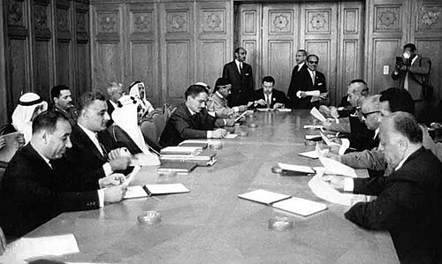
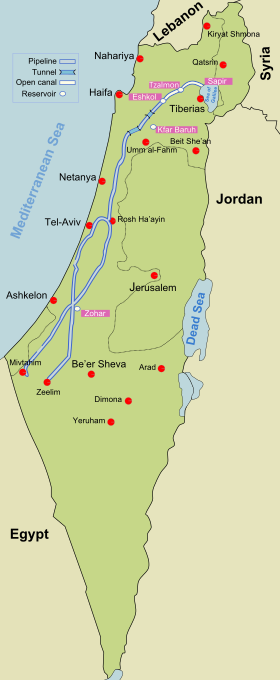
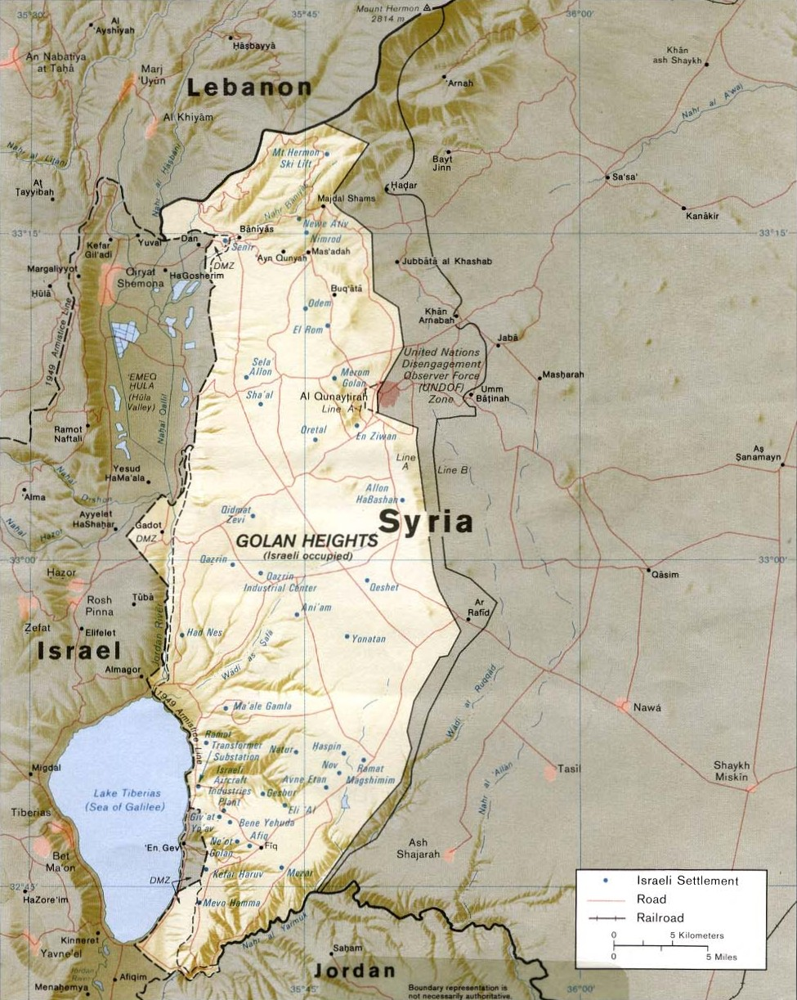
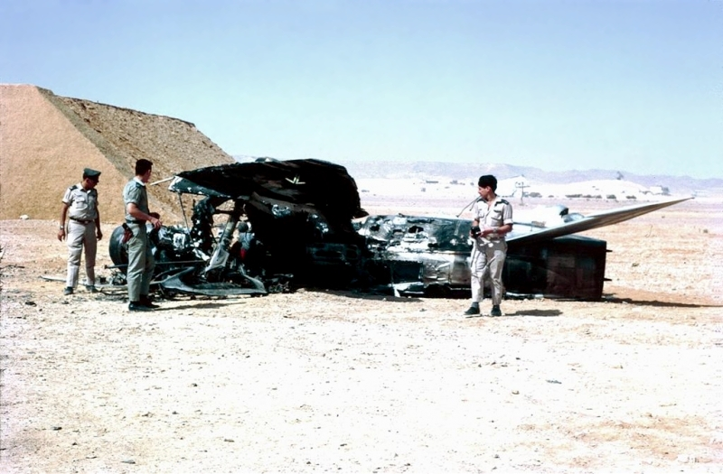
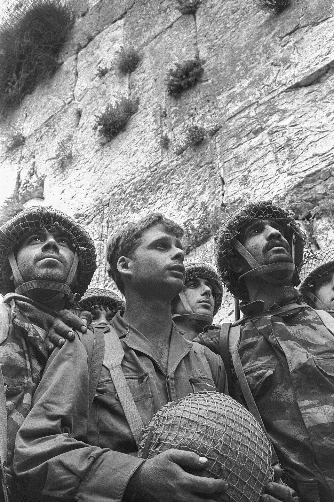
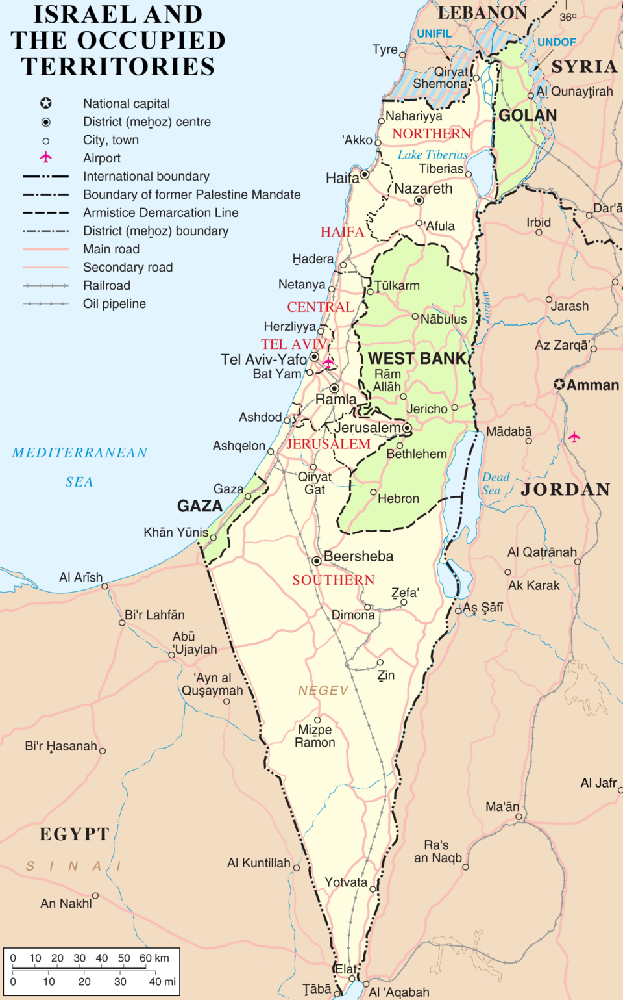
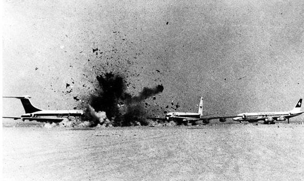
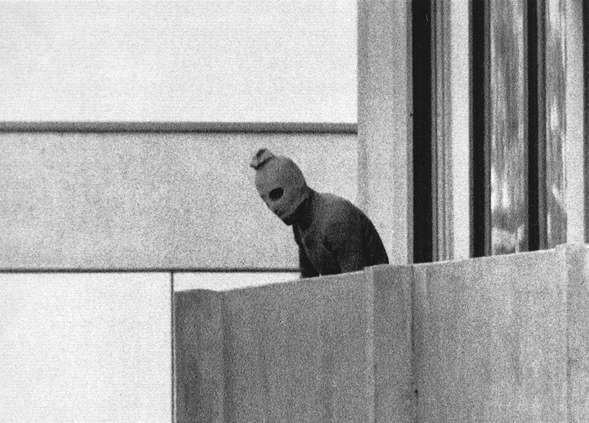
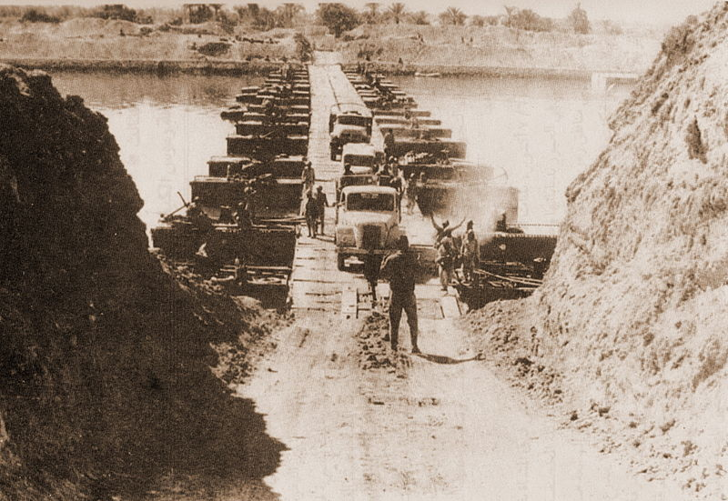
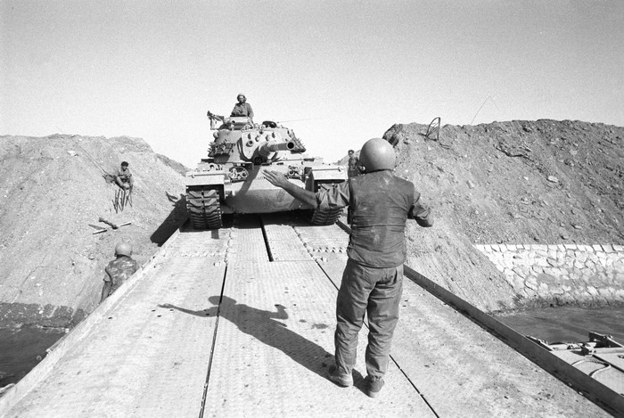

Edexcel GCSE (9–1) History • Option 26/27
Conflict in the Middle East
1945–1995
Key Topic 2: The escalating conflict, 1964–73

David Ben-Gurion reads the Declaration of Independence beneath the portrait of Theodor Herzl (Tel Aviv, 14 May 1948).
Official Course Textbook
Enquiry: “Why has peace proved so elusive in the Middle East?”
Contents
|
Lesson 1: KT 2.1 Enquiry: How Did Water, Border Raids, and Rhetoric Make a Second Arab-Israeli War Inevitable? (1964–1967)
|
|
|
Lesson 2: KT 2.2 Enquiry: Why Was the Six-Day War Decided in Three Hours, and Did Nasser Intend to Fight? (May–June 1967)
|
|
|
Lesson 3: KT 2.3 Enquiry: "Land for Peace" or Permanent Stalemate: How Did the 1967 Conquered Territories Transform the Conflict?
|
|
|
Lesson 4: KT 2.4: The Rise of Palestinian Resistance: The PLO, Black September & Munich (1968–1972)
|
|
|
Lesson 5: KT 2.5: The War of Attrition & The Yom Kippur War (1969–1973)
|
|
L1: KT 2.1 Enquiry: How Did Water, Border Raids, and Rhetoric Make a Second Arab-Israeli War Inevitable? (1964–1967)[[SRC_MARKER:L4_Start]]
Learning Objectives
Explain the significance of the 1964 Cairo Conference and the growth of Palestinian resistance groups.
Describe the causes and consequences of the River Jordan water dispute and Syrian border clashes.
Evaluate how the Samu raid (November 1966) and the Golan air battle (7 April 1967) created unstoppable momentum towards war.
In January 1964, Arab leaders met in Cairo to resolve two crises: Israel was pumping water out of the River Jordan, and Palestinians demanded their own state. Within three years, artillery battles and aerial dogfights had made a full-scale war inevitable.
Recall & Retrieval
1. What 1917 British declaration supported a Jewish national home in Palestine?
2. Which international organisation granted Britain the Mandate for Palestine in 1922?
3. Which Jerusalem hotel was bombed by the Zionist militant group Irgun in July 1946?
4. What was the number of the United Nations Resolution to partition Palestine in 1947?
5. On what date did David Ben-Gurion proclaim the establishment of the State of Israel?
6. Approximately how many Palestinian Arabs became refugees during the 1948–49 War?
7. What 1950 Israeli law granted every Jewish person the right to settle in Israel?
8. Who became President of Egypt in 1954 and emerged as leader of Pan-Arab nationalism?
9. What vital international waterway did Nasser nationalise in July 1956?
10. Which two European powers secretly colluded with Israel in the secret tripartite agreement (1956)?
Vocabulary Check
The Odd One Out: Circle ONE term that does not belong with the others. Explain your reasoning: What historical connection links the other terms, and why is your chosen term different?
Cairo Conference (1964) | PLO (Palestine Liberation Organisation) | Fatah | National Water Carrier | Samu Raid (1966) | 7 April 1967 Dogfight
Teacher Model / Pupil Reasoning:
Source A: Archival Primary Photograph: Arab Heads of State at the First Arab League Summit in Cairo (January 1964)
Archival Evidence • Expand ▼
[[SRC_MARKER:L4_Source_3]]

Arab leaders, including President Gamal Abdel Nasser of Egypt and King Hussein of Jordan, seated at the summit table in Cairo to establish joint policy regarding Israel’s National Water Carrier and the creation of the PLO.
Discussion / Hinge Question: Does the assembly of Arab leaders in Source A indicate that war was unavoidable in 1964, or was military confrontation deferred until Arab armed forces were unified?

Map of Israel showing the pipeline, tunnel, and canal route of the National Water Carrier diverting water from the Sea of Galilee south to the Negev Desert
[1.1] In January 1964, Arab League leaders gathered at the Cairo Summit, convened by Egyptian President Gamal Abdel Nasser. The catalyst was Israel's National Water Carrier, a pipeline diverting water from the Sea of Galilee to the Negev desert (see National Water Carrier Map). Arab leaders viewed this as economic expansionism. In response, the summit voted to establish the Palestine Liberation Organisation (PLO) and approved an Arab plan to divert the River Jordan headwaters in Syria and Lebanon, threatening roughly one-third of Israel’s freshwater supply (Source A).
[1.2] This dispute quickly ignited military clashes. Between 1964 and 1966, Israeli tanks and aircraft bombarded Syrian engineering sites, halting the diversion canals. Simultaneously, Yasser Arafat's Fatah began cross-border guerrilla raids targeting Israeli water infrastructure and railways. Following a radical military coup in February 1966, Syria’s new government openly sponsored Fatah’s "popular liberation war" against Israel, transforming regional water disputes into active frontier warfare.
Source B: Historical Topographical Map: The Syrian Armistice Line and Golan Heights Overlooking Israeli Settlements (1964–1967)
Archival Evidence • Expand ▼
[[SRC_MARKER:L4_Source_4]]

Contour map illustrating the Syrian artillery batteries on the Golan Heights plateau dominating the Israeli agricultural kibbutzim in the Hula Valley below.
Discussion / Hinge Question: How does the physical elevation of the Golan Heights shown in Source B explain why border skirmishes between Israel and Syria were so difficult to resolve peacefully?
[2.1] Between 1965 and 1967, the Golan Heights became the Middle East’s most volatile frontier. Syrian artillery batteries atop the 1,000-foot volcanic plateau held tactical dominance over low-lying Israeli kibbutzim in the Hula Valley (Source B). Syrian gunners regularly shelled farmers cultivating disputed demilitarised zones, forcing Israeli tractors to be custom-armored and school children to sleep in reinforced underground bunkers.
[2.2] In response, Israeli Chief of Staff Yitzhak Rabin and Prime Minister Levi Eshkol enforced aggressive military retaliation, declaring that host Arab states were directly responsible for guerrilla raids. This hardline doctrine created an escalatory cycle: Fatah landmines triggered Israeli air strikes and artillery barrages, which in turn invited Syrian counter-bombardments and fueled Arab demands for war.
Source C: Archival Diplomatic Dispatch: The 7 April 1967 Air Battle and Arab Political Repercussions
Archival Evidence • Expand ▼
[[SRC_MARKER:L4_Source_5]]
Following the shooting down of six Syrian MiG-21 fighters over Damascus on 7 April, intense political pressure has gripped both Damascus and Cairo. Syrian authorities and state media have expressed profound outrage at Egypt's failure to intervene, openly questioning the value of the November 1966 Egyptian-Syrian Defence Agreement. Radio Damascus and Syrian editorial columns have launched stinging taunts against President Gamal Abdel Nasser, pointedly asking why 100,000 Egyptian troops and hundreds of jet fighters remain inactive behind the shield of the United Nations Emergency Force (UNEF) in the Sinai Peninsula while Israeli aircraft strike Syrian territory with impunity. Western diplomatic observers in Cairo confirm that this sustained public humiliation has gravely damaged Nasser's prestige as the undisputed leader of the Arab world, making it virtually impossible for him to remain inactive during the next border crisis without facing complete political delegitimization.
Contemporary diplomatic intelligence report recording the Syrian public reaction following the shooting down of six MiG-21 fighter jets over Damascus.
Discussion / Hinge Question: Why did the public humiliation of Syria in the 7 April 1967 air battle make it almost impossible for President Nasser of Egypt to remain inactive?
[3.1] In late 1966, escalating friction triggered major military confrontations. On 11 November 1966, a Fatah landmine killed three Israeli soldiers near the border. Despite King Hussein of Jordan attempting to curb guerrillas, Israel launched a massive daytime reprisal against the West Bank town of Samu on 13 November 1966, destroying dozens of houses and killing 15 Jordanian soldiers. The Samu raid triggered violent riots across the West Bank against King Hussein.
[3.2] The decisive flashpoint occurred on 7 April 1967. Following Syrian shelling of an Israeli tractor, an aerial battle erupted. Israeli Mirage jets shot down six Syrian MiG-21s, chasing them to Damascus (Source C). This humiliating defeat prompted Syrian broadcasts to accuse Nasser of cowardice for hiding behind UNEF peacekeepers in the Sinai, placing intense political pressure on Cairo to mobilize for war.
[4.1] By May 1967, war had become inevitable due to three converging catalysts: competition over the River Jordan water supply, state-sponsored Fatah guerrilla sabotage, and Israel's doctrine of disproportionate military retaliation. Each local clash escalated regional hostility beyond diplomatic control.
[4.2] Crucially, when false Soviet intelligence claimed in mid-May that Israel was massing twelve brigades to invade Syria, Nasser felt compelled to mobilize Egyptian troops into the Sinai. Neither side initially sought a total war, but rhetorical brinkmanship and interlocking mutual defense commitments made peaceful de-escalation impossible.
L2: KT 2.2 Enquiry: Why Was the Six-Day War Decided in Three Hours, and Did Nasser Intend to Fight? (May–June 1967)[[SRC_MARKER:L5_Start]]
Learning Objectives
Explain the sequence of events in May 1967 that made war unavoidable (Soviet reports, UNEF, Tiran).
Describe the execution and decisive impact of Israel's pre-emptive dawn airstrike on 5 June 1967.
Trace the three military campaigns and explain why Israel succeeded so rapidly in Sinai, the West Bank, and the Golan Heights.
On the morning of 5 June 1967, nearly 200 Israeli fighter jets flew low beneath radar over the Mediterranean. Within three hours, over 300 Egyptian aircraft lay burning on the tarmac. By Saturday evening, the map of the Middle East had been changed forever.
Recall & Retrieval
1. In which city was the Palestine Liberation Organisation (PLO) founded in January 1964?
2. Who was elected the first chairman of the PLO in 1964?
3. Which Palestinian guerrilla faction was founded by Yasser Arafat in Kuwait in 1959?
4. What strategic high ground overlooking Galilee kibbutzim was controlled by Syria before 1967?
5. How many Syrian MiG-21s were shot down by the Israeli Air Force on 7 April 1967?
6. What peacekeeping force was deployed in Sinai following the 1956 Suez Crisis?
7. What narrow strait did President Nasser close to Israeli shipping on 22 May 1967?
8. Which coastal outpost at the entrance of the Gulf of Aqaba was fortified by Egyptian guns?
9. Which monarch of Jordan flew to Cairo on 30 May 1967 to sign a joint defence pact with Nasser?
10. Who was appointed Israeli Minister of Defence on 1 June 1967 on the eve of war?
Vocabulary Check
The Golden Sentence: Choose TWO terms from the word bank. Write ONE grammatically sophisticated, historically accurate sentence connecting them using a causal conjunction (because, although, or consequently):
UNEF (UN Emergency Force) | Straits of Tiran | Pre-emptive Strike | Air Supremacy | West Bank | Western Wall
Teacher Model / Pupil Sentence:[1.1] On 13 May 1967, the Soviet Union gave Egyptian President Gamal Abdel Nasser false intelligence claiming Israel was massing twelve brigades to invade Syria. Though UN observers found no buildup, Nasser acted swiftly to reclaim Arab leadership: he deployed 100,000 troops and 1,000 tanks into Sinai, expelled the UN Emergency Force (UNEF) on 16 May, and closed the Straits of Tiran on 22 May.
[1.2] Closing the Straits of Tiran severed Israel's sole maritime trade corridor to Asia and blocked 90% of its oil imports through Eilat—an explicit act of war (casus belli). When King Hussein of Jordan flew to Cairo on 30 May to sign a mutual defense pact, Israel faced military encirclement. Fearing national destruction, Prime Minister Levi Eshkol formed a national unity government and appointed war hero Moshe Dayan as Minister of Defence to launch a pre-emptive strike.
Source A: Archival Photograph: Destroyed Egyptian Jet Aircraft at Bir Gifgafa Airfield, Sinai (5 June 1967)
Archival Evidence • Expand ▼
[[SRC_MARKER:L5_Source_3]]

Charred wreckage of Egyptian combat aircraft destroyed on the tarmac during the Israeli dawn air strike of 5 June 1967.
Discussion / Hinge Question: How does Source A help explain why the ground war in the Sinai Peninsula was decided so rapidly in Israel's favour?
[2.1] At 7:45 am on 5 June 1967, Israel launched a pre-emptive dawn airstrike. Leaving only twelve jets to defend home skies, nearly 200 Israeli aircraft flew low over the Mediterranean—just 30 feet above the waves—to evade Egyptian radar. They struck seventeen Egyptian airbases from the west at breakfast time, catching Egyptian pilots completely unprepared.
[2.2] Using rocket-boosted cratering bombs, Israeli pilots cratered runways before strafing parked aircraft. In under three hours, over 300 Egyptian combat planes were destroyed on the ground (Source A). When Syria and Jordan launched retaliatory air strikes, Israeli jets destroyed their air forces as well, winning total air supremacy and leaving Arab ground forces completely exposed.
Source B: Archival Primary Photograph: Israeli Paratroopers at the Western Wall, Jerusalem (David Rubinger, 7 June 1967)
Archival Evidence • Expand ▼
[[SRC_MARKER:L5_Source_4]]

Israeli paratroopers standing in front of the Western Wall in the Old City of Jerusalem shortly after capturing the city on 7 June 1967.
Discussion / Hinge Question: Why did the capture of the Western Wall shown in Source B carry such profound religious and psychological significance for the Jewish people?
[3.1] With air superiority secured, Israeli ground forces swept across three fronts. In the Sinai Peninsula, armored divisions led by Ariel Sharon shattered Egyptian defensive lines. In panic, Egypt's military command ordered an uncoordinated retreat, leaving hundreds of tanks abandoned as Israeli forces reached the Suez Canal within four days.
[3.2] On the eastern front, Jordan began shelling West Jerusalem. Israeli forces counter-attacked into the West Bank, and on 7 June, paratroopers secured the Old City of Jerusalem and the holy Western Wall (Source B). Finally, on 9–10 June, Israeli forces scaled the fortified cliffs of the Golan Heights, routing Syrian artillery before a UN ceasefire ended the war.
[4.1] In just six days, Israel quadrupled its territory, capturing the Sinai Peninsula, Gaza Strip, West Bank, East Jerusalem, and the Golan Heights. Israeli losses were under 1,000 soldiers, while Arab armies suffered over 15,000 Egyptian, 6,000 Jordanian, and 1,000 Syrian casualties.
[4.2] While these conquests provided strategic buffer zones, they brought over one million Palestinian Arabs under Israeli military occupation, sparking a fresh refugee exodus. The catastrophic humiliation suffered by Arab states ensured that rather than securing permanent peace, the 1967 war laid the groundwork for future armed conflict.
L3: KT 2.3 Enquiry: "Land for Peace" or Permanent Stalemate: How Did the 1967 Conquered Territories Transform the Conflict?[[SRC_MARKER:L6_Start]]
Learning Objectives
Identify the five Occupied Territories and explain the humanitarian impact on Palestinian refugees.
Explain the significance of the Khartoum Conference (August 1967) and the "Three Noes".
Analyse the core principles and deliberate ambiguities of UN Security Council Resolution 242 (November 1967).
In the summer of 1967, Israel found itself ruling over one million Palestinians. In September, Arab leaders declared the "Three Noes" in Khartoum. In November, the UN passed Resolution 242 promising "Land for Peace"—yet its ambiguous words locked the region in stalemate.
Recall & Retrieval
1. How many days did the Arab-Israeli war of June 1967 last?
2. Name the massive desert peninsula captured by Israel from Egypt in 1967.
3. Which territory along the Mediterranean coast was captured from Egyptian military administration?
4. Which territory on the west bank of the River Jordan was captured from the Kingdom of Jordan?
5. Which holy sector of Jerusalem was captured and annexed by Israel in June 1967?
6. Which strategic volcanic plateau was captured by Israeli troops from Syria on 9–10 June?
7. Approximately how many Palestinian Arabs became refugees following the 1967 war?
8. What city in Sudan hosted the Arab League summit in August–September 1967?
9. What famous formula summarized the Arab League position at the Khartoum Summit?
10. What core diplomatic formula was introduced by UN Security Council Resolution 242?
Vocabulary Check
Conceptual Classification: Categorise the terms from the word bank into the two historical boxes below:
Occupied Territories | Khartoum Conference | The Three Noes | UN Resolution 242 | Land for Peace | Israeli Settlements
Power, Governance & Warfare
Economy, Trade & Society
Source A: Archival Primary Map: The Conquered Occupied Territories Following the Six-Day War (June 1967)
Archival Evidence • Expand ▼
[[SRC_MARKER:L6_Source_3]]

Official cartographic survey detailing the five territories captured and placed under Israeli military administration in June 1967: the Sinai Peninsula, Gaza Strip, West Bank, East Jerusalem, and the Golan Heights.
Discussion / Hinge Question: How does the geographical distribution of the territories shown in Source A explain why the Arab states demanded unconditional withdrawal before direct peace negotiations could begin?
[1.1] The June 1967 ceasefire left Israel in control of vast lands (Source A): the Sinai Peninsula and Gaza Strip from Egypt, the West Bank and East Jerusalem from Jordan, and the Golan Heights from Syria. These created natural buffer zones—the Suez Canal, Jordan River, and Golan cliffs—shielding Israel’s heartland from surprise ground assault.
[1.2] However, occupation created immense humanitarian dilemmas. Israel brought over one million Palestinian Arabs under military administration, while 300,000 Palestinians fled across the Jordan River into refugee camps. Israel immediately annexed East Jerusalem as its unified capital and soon authorized the first civilian Jewish settlements in the Jordan Valley and Gush Etzion, entrenching future territorial disputes.
Source B: Archival Communiqué: The Khartoum Arab League Summit Resolution (1 September 1967)
Archival Evidence • Expand ▼
[[SRC_MARKER:L6_Source_4]]
The Arab Heads of State have agreed to united political efforts at the international and diplomatic level to eliminate the effects of aggression and to ensure the withdrawal of the aggressive Israeli forces from the Arab lands which have been occupied since the aggression of 5 June. This will be done within the framework of the main principles by which the Arab States abide, namely: no peace with Israel, no recognition of Israel, no negotiations with it, and adherence to the rights of the Palestinian people in their own country.
Official English translation of the third clause of the Khartoum Summit declaration issued by eight Arab heads of state in Sudan.
Discussion / Hinge Question: Why did the "Three Noes" in Source B convince Israeli leaders that offering to return the Occupied Territories would not bring genuine peace?
[2.1] To coordinate an Arab response to defeat, eight Arab heads of state convened in Khartoum, Sudan, in August 1967. While King Hussein urged quiet diplomacy to reclaim lost lands, hardliners led by Nasser insisted that negotiating from weakness would legitimize Israeli conquest and humiliate the Arab world.
[2.2] The conference concluded with the famous "Three Noes" of Khartoum: "No peace with Israel, no recognition of Israel, no negotiations with it" (Source B). To Israelis, this rigid stance proved Arab leaders remained dedicated to Israel's destruction, leading Israel's cabinet to abandon early plans for territorial compromise and harden resolve to retain the occupied territories.
Source C: Diplomatic Treaty Comparison: Article 1(i) of UN Security Council Resolution 242 in English and French
Archival Evidence • Expand ▼
[[SRC_MARKER:L6_Source_5]]
Article 1(i) of UN Security Council Resolution 242 (Adopted 22 November 1967):
[Official English Text — Drafted by Lord Caradon, UK]:
'Affirms that the fulfilment of Charter principles requires the establishment of a just and lasting peace in the Middle East which should include the application of both the following principles:
(i) Withdrawal of Israel armed forces from territories occupied in the recent conflict...'
[Official French Text — Equally Authoritative Official UN Record]:
'Affirme que l\'accomplissement des principes de la Charte exige l\'instauration d\'une paix juste et durable au Moyen-Orient, qui devrait comprendre l\'application des deux principes suivants:
(i) Retrait des forces armées israéliennes des territoires occupés lors du récent conflit...'
[Linguistic Significance]: The English text deliberately omits the definite article 'the' ('from territories occupied'), enabling Israel to argue it is only required to withdraw from SOME occupied territories to secure defensible borders. Conversely, the French text uses 'des territoires occupés' ('from THE occupied territories'), enabling Arab governments to insist that international law mandates complete withdrawal from ALL occupied lands.
Parallel text comparison illustrating the deliberate absence of the definite article "the" in the English version compared to the French translation.
Discussion / Hinge Question: Why did the differing interpretations of the single word "the" in Source C allow both Israel and Arab states to claim they were following the resolution?
[3.1] On 22 November 1967, the UN Security Council unanimously passed Resolution 242, establishing the "Land for Peace" principle. Drafted by Britain’s Lord Caradon, it asserted the "inadmissibility of the acquisition of territory by war," calling for Israeli armed forces to withdraw from occupied areas in return for Arab states recognizing Israel's right to live in peace within secure borders.
[3.2] However, deliberate linguistic ambiguity crippled implementation. The English text called for withdrawal from "territories occupied" (some territories), whereas the French text specified "des territoires occupés" (all territories) (Source C). Furthermore, Resolution 242 addressed Palestinians only as a generic "refugee problem," entirely omitting their national right to self-determination.
[4.1] In the long term, the 1967 conquests replaced the quest for peace with a diplomatic stalemate. Israel fortified its borders—building the Bar-Lev Line along the Suez Canal—and subsidized Jewish settlements, while Arab leaders maintained the Khartoum "Three Noes."
[4.2] Consequently, Palestinians concluded that conventional Arab armies would never liberate their homeland, accelerating the growth of independent guerrilla groups like the PLO. Without diplomatic progress, Resolution 242 could not avert the impending War of Attrition and the 1973 Yom Kippur War.
L4: KT 2.4: The Rise of Palestinian Resistance: The PLO, Black September & Munich (1968–1972)[[SRC_MARKER:L7_Start]]
Learning Objectives
Explain the significance of the Battle of Karameh (1968) for Palestinian morale and Arafat's rise.
Describe the events of Black September in Jordan (1970) and explain why the PLO was expelled.
Analyse the 1972 Munich Olympics massacre and evaluate its international impact.
In September 1970, Palestinian militants blew up three hijacked airliners in the Jordanian desert. Two years later, hooded gunmen scaled an Olympic fence in Munich. Having lost faith in Arab armies, Palestinians took their fight to the global stage.
Recall & Retrieval
1. What core diplomatic formula was established by UN Resolution 242 in November 1967?
2. What were the famous "Three Noes" declared by Arab leaders at Khartoum in 1967?
3. Name three of the five territories captured by Israel in the Six-Day War.
4. How many Palestinian refugees fled into Jordan following the 1967 war?
5. Which Palestinian guerrilla movement was led by Yasser Arafat?
6. What does the acronym PLO stand for?
7. In what year was Yasser Arafat elected Chairman of the PLO?
8. Which Egyptian president expelled UNEF and closed the Straits of Tiran in 1967?
9. What was the 1949 armistice border between Israel and Jordan known as?
10. What term describes Palestinian armed guerrilla fighters who "sacrifice themselves"?
Vocabulary Check
Spot the Deliberate Error: Read the statement below. One historical fact or vocabulary concept has been deliberately falsified. Underline the error and explain the accurate historical reality below:
Fedayeen | Battle of Karameh (1968) | PFLP | Dawson's Field (1970) | Black September (1970) | Munich Olympics (1972)
Challenge: Write ONE statement containing a deliberate historical misconception using Fedayeen or Battle of Karameh (1968). Identify and correct the error:
Teacher Model / Historical Correction:[1.1] The 1967 defeat shattered Palestinian faith in Arab leaders like Nasser. Concluding they had to liberate their homeland themselves, young Palestinians joined armed guerrilla groups (fedayeen). On 21 March 1968, at the Battle of Karameh in Jordan, Yasser Arafat's Fatah fighters and Jordanian artillery fiercely resisted an Israeli armored reprisal raid.
[1.2] Although Israel destroyed the guerrilla camp, Fatah inflicted 28 Israeli fatalities. Karameh was celebrated across the Arab world as a heroic moral victory. Thousands of recruits joined Fatah, and in February 1969, Yasser Arafat was elected Chairman of the Palestine Liberation Organisation (PLO), converting it into an independent armed national movement.
Source A: Archival Photograph: PFLP Militants Detonating Hijacked Commercial Airliners at Dawson's Field, Jordan (12 September 1970)
Archival Evidence • Expand ▼
[[SRC_MARKER:L7_Source_3]]

The smoking wreckage of BOAC, TWA, and Swissair passenger aircraft blown up by PFLP hijackers on a desert airstrip near Zarqa, Jordan.
Discussion / Hinge Question: How does Source A help explain why King Hussein of Jordan concluded that the armed Palestinian guerrilla factions had to be expelled from his country?
[2.1] By 1970, Palestinian guerrillas operated as a "state within a state" in Jordan, defying King Hussein’s laws. To capture international attention, George Habash’s Marxist PFLP pioneered airline hijackings. In September 1970, militants hijacked four Western jetliners, forcing three to land at Dawson's Field in the Jordanian desert.
[2.2] After evacuating over 300 passengers, the hijackers blew up the empty airliners on camera (Source A). Viewing this as a direct challenge to his monarchy, King Hussein declared martial law on 17 September 1970. In the brutal civil conflict known as Black September, the Jordanian army crushed Palestinian militias, expelling the PLO to southern Lebanon by 1971.
Source B: Archival Primary Photograph: Masked Black September Gunman on the Balcony at Munich Olympic Village (5 September 1972)
Archival Evidence • Expand ▼
[[SRC_MARKER:L7_Source_4]]

A masked member of the Black September militant group on the balcony of 31 Connollystraße in the Olympic Village, Munich.
Discussion / Hinge Question: Why did the live television broadcast of the Munich crisis shown in Source B create both worldwide publicity and widespread condemnation for the Palestinian cause?
[3.1] Exiled in Lebanon, a radical covert faction named Black September sought revenge. On 5 September 1972, during the Munich Olympic Games, eight Black September gunmen infiltrated the Olympic Village, killing two Israeli athletes and taking nine others hostage.
[3.2] Militants demanded the release of 234 Palestinian prisoners. Israeli Prime Minister Golda Meir refused to negotiate with terrorists. A botched West German rescue attempt at Fürstenfeldbruck airbase ended in disaster: all nine Israeli hostages, five terrorists, and one German policeman were killed (Source B). In response, Meir launched Operation Wrath of God, authorizing Mossad to track down and assassinate the organizers.
[4.1] International terrorism had contradictory outcomes. On one hand, high-profile attacks like Munich thrust the Palestinian national struggle onto the world stage, forcing the UN in 1974 to recognize the PLO as the legitimate representative of the Palestinian people.
[4.2] On the other hand, terrorism caused severe strategic harm. It provoked the bloodshed of Black September, alienated Western public opinion, and invited devastating Israeli reprisals. Recognising that violence alone could not defeat Israel, Arafat began steering the PLO toward international diplomacy by the mid-1970s.
L5: KT 2.5: The War of Attrition & The Yom Kippur War (1969–1973)[[SRC_MARKER:L8_Start]]
Learning Objectives
Explain the nature of the War of Attrition and Anwar Sadat's strategic motivation for war.
Describe how Egypt and Syria achieved tactical surprise on 6 October 1973 and breached Israeli defenses.
Analyse the global impact of the war, including superpower confrontation and the OPEC oil embargo.
On 6 October 1973, while Israel observed its holiest fast day, 80,000 Egyptian soldiers crossed the Suez Canal using high-pressure water hoses to wash away Israeli sand ramparts. It was a war that brought the superpowers to nuclear alert and changed Middle Eastern history.
Recall & Retrieval
1. What Israeli hostage crisis occurred at an international sporting event in September 1972?
2. What covert Mossad retaliation operation was authorized by Golda Meir following Munich?
3. Which desert airstrip in Jordan was used by the PFLP in 1970 to blow up hijacked airliners?
4. Which country became the main headquarters for the PLO after being expelled from Jordan in 1971?
5. What static artillery border conflict was fought along the Suez Canal in 1969–70?
6. Who succeeded Gamal Abdel Nasser as President of Egypt following Nasser’s death in 1970?
7. What fortified sand-rampart defensive line did Israel construct along the Suez Canal?
8. What method did Egyptian engineers use to blast through the sand ramparts of the Bar-Lev Line?
9. On what Jewish holy day did Egypt and Syria launch their coordinated surprise attack in 1973?
10. Which vital international waterway remained closed to shipping between 1967 and 1975?
Vocabulary Check
The Odd One Out: Circle ONE term that does not belong with the others. Explain your reasoning: What historical connection links the other terms, and why is your chosen term different?
War of Attrition | Bar-Lev Line | Anwar Sadat | Yom Kippur | OPEC Oil Embargo | Shuttle Diplomacy
Teacher Model / Pupil Reasoning:[1.1] Between 1969 and 1970, Nasser waged the War of Attrition across the Suez Canal, attempting to exhaust Israeli forces through relentless artillery bombardments. In response, Israel built the Bar-Lev Line, a fortified chain of sand ramparts over 60 feet high. A US-brokered ceasefire ended fighting in August 1970 after thousands of deaths, leaving frontlines unchanged.
[1.2] Following Nasser's death in September 1970, new Egyptian President Anwar Sadat developed a pragmatic military strategy. Realising Egypt’s economy was crippled and Israel would never surrender Sinai through diplomacy while holding military superiority, Sadat planned a limited surprise offensive to shatter the myth of Israeli invincibility and force American diplomatic intervention.
Source A: Archival Photograph: Egyptian Infantry and Armored Columns Crossing the Suez Canal (October 1973)
Archival Evidence • Expand ▼
[[SRC_MARKER:L8_Source_3]]

Egyptian forces crossing pontoon bridges across the Suez Canal after breaching the sand ramparts of the Israeli Bar-Lev Line.
Discussion / Hinge Question: How does Source A illustrate why the opening crossing of the Suez Canal was viewed as a major technological and psychological triumph for Egypt?
[2.1] On 6 October 1973, at 2:00 pm, Egypt and Syria launched a joint surprise attack on Yom Kippur (the holiest day in Judaism) during the Muslim holy month of Ramadan. With Israeli soldiers on leave, Syrian tanks assaulted the Golan Heights while 80,000 Egyptian infantry crossed the Suez Canal under a 2,000-gun artillery barrage.
[2.2] Egyptian engineers used high-pressure water cannons to blast breaches through the Bar-Lev sand ramparts within hours (Source A). Israeli tank and air counter-attacks were shattered by Soviet-supplied SAM-6 anti-aircraft missiles and wire-guided Sagger anti-tank missiles, inflicting heavy early losses on Israeli forces.
Source B: Archival Photograph: Israeli Armored Vehicles and Tanks Crossing the Suez Canal to the West Bank (October 1973)
Archival Evidence • Expand ▼
[[SRC_MARKER:L8_Source_4]]

Israeli Centurion tanks and armored personnel carriers crossing a pontoon bridge to the west bank of the Suez Canal during the counter-offensive of October 1973.
Discussion / Hinge Question: How does Source B demonstrate how the military tide of the war shifted during the second week of fighting in October 1973?
[3.1] Prime Minister Golda Meir appealed to the US, prompting President Nixon to launch a massive military airlift, matched by a Soviet airlift to Arab armies. After halting Syrian armor on the Golan, Israeli general Ariel Sharon led armored forces across the Suez Canal on 15 October, encircling Egypt's Third Army (Source B).
[3.2] On 17 October 1973, Arab OPEC members deployed the oil weapon, cutting oil production and embargoing the US. Crude oil prices quadrupled, causing global inflation and fuel shortages. When Soviet intervention threatened a superpower nuclear showdown, US Secretary of State Henry Kissinger negotiated a UN ceasefire on 24 October 1973.
[4.1] The 1973 war was a psychological earthquake. For Israel, losing over 2,600 soldiers shattered military complacency, prompting the Agranat Commission inquiry and the resignations of military leaders and Prime Minister Golda Meir in 1974.
[4.2] For Egypt, crossing the canal restored national pride, giving Sadat the political authority to negotiate with Israel from strength. The crisis convinced Israel that occupation did not ensure security, while the oil embargo forced US commitment to regional peacemaking—paving the way for Kissinger's shuttle diplomacy and the 1978 Camp David Accords.
Generated: 2026-10-19 15:36:42 UTC | Unit: cme_new